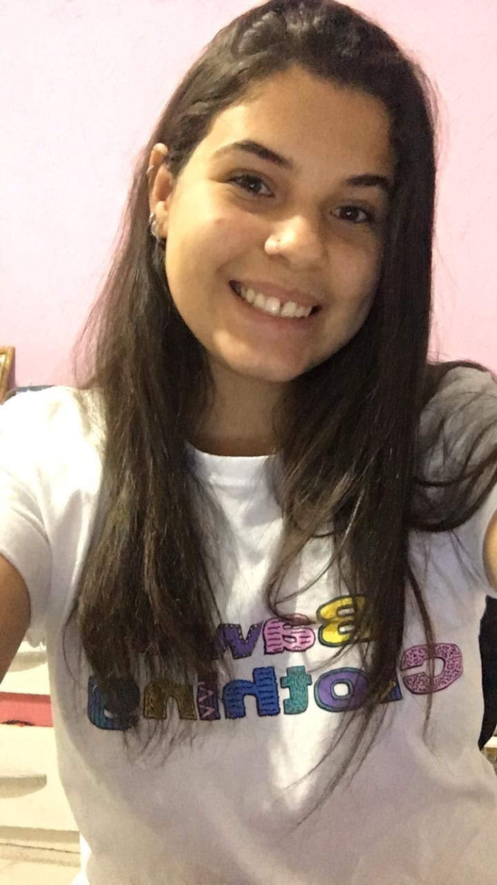

A vontade de crescer e minha determinação sempre me impulsionaram a dar o meu melhor em qualquer circunstância. Aprendi a transformar meus desafios em pequenos aprendizados, aperfeiçoando minha comunicação, a curiosidade em coisas novas, a criatividade e meu perfil colaborativo e resiliente, visando sempre entregar o melhor resultado.
Estou migrando de carreira em busca de novas oportunidades de profissionalização no mundo da tecnologia, pois tenho consciência do impacto da mesma em nossas vidas. Estou entusiasmada para começar a contribuir em um mercado rico em conhecimento e acolhedor como esse, portanto, um dos meus maiores objetivos é deixar minha marca utilizando tudo o que aprendi e que ainda estou a aprender nessa área que cada vez mais me fascina
